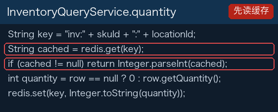
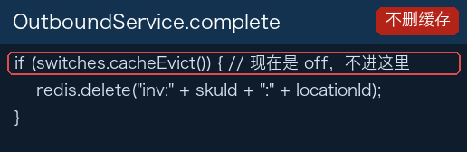
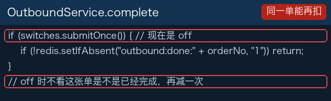
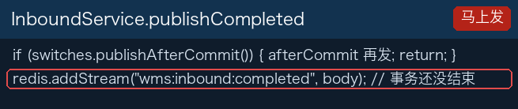

查询先走缓存


cache-evict 是 off。先查询一次，缓存写入 10。再出库 3。库里已经是 7，再查询仍返回 10。
inventory.quantity 是 7。改良版改了这一块：出库后删掉缓存
改良版上 cache-evict 是 on。库存更新成功后删除 inv:货品:库位。再查询未命中，回到 inventory 读到 7，并把 7 写回缓存。
锁加在判断之后
stock-lock 是 after-check。完成出库时先读剩余，判断够了才 SETNX lock:inv:货品:库位。两个请求可以都先读到 1。

同一张单连点两次：submit-once 是 off，第二次仍会再减库存。10 出 1 再完成一次，剩下 8。
改良版改了这一块：先加锁，同一单号只扣一次
改良版上 stock-lock 是 sku-location。进检查之前就 SETNX lock:inv:货品:库位。后到的请求拿不到锁，不会再读一次旧数量。第三部分带上 version 的更新还在。
submit-once 是 on。完成前 SET outbound:done:单号 NX。同一单号第二次拿不到这个键，不再扣减。10 出 1 再点一次，数量仍是 9。
消息在事务结束前就发出去

入库完成往列表 wms:inbound:completed 追加 单号|货品|库位|数量。publish-after-commit 是 off，主事务还可能回滚，消息已经在列表里。consume-once 是 off，同一条再读一次，stock_flow 会多一行相同单号。
改良版改了这一块：提交成功才发，同一个单号只记一笔
改良版上 publish-after-commit 是 on。事务 afterCommit 才往列表追加。主事务回滚时，列表里没有这条。
consume-once 是 on。处理前 SET inbound:consumed:单号 NX。同一个单号第二次拿不到键，stock_flow 只留一行。
改良版改了哪几块
讲义到这里是同一份。「第四部分改良版」上不同的是这些开关。
| 这一部分现在的代码 | 改良版上的代码 |
|---|---|
cache-evict 是 off。出库之后查询仍返回缓存里的 10。 | on。更新成功后删除键，再查询返回 7。 |
stock-lock 是 after-check。两个请求可以都先读到够。 | sku-location。进检查之前就按货品 + 库位加锁。 |
submit-once 是 off。同一张单第二次仍再扣，10 出 1 再完成剩下 8。 | on。同一单号第二次不再扣，剩下 9。 |
publish-after-commit 是 off。事务还没结束，消息已经在列表里。 | on。提交成功才发。回滚时列表里没有这条。 |
consume-once 是 off。同一条再读一次，流水多一行。 | on。同一个单号只记一笔。 |
查询接口、出库完成、入库完成，两个分支走的是同一套入口。课堂上把改良版合并进第四部分，带过去的是上面这些开关。
重温：把改良版合并进第四部分
源分支是 第四部分改良版，目标分支是 第四部分。讲义和这一份相同。操作和第二部分讲义最后一节相同。全班只合并这一次。